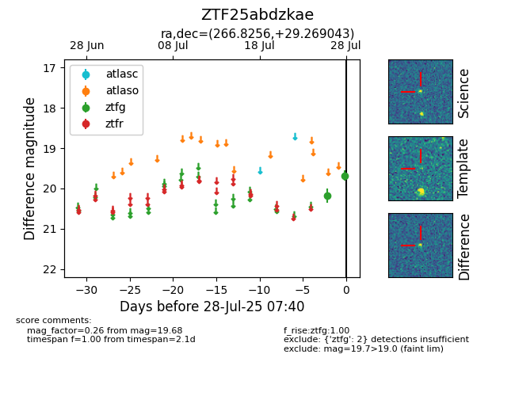

Target ZTF25abdzkae at 2025-07-28 07:40, see:
FINK: fink-portal.org/ZTF25abdzkae
Lasair: lasair-ztf.lsst.ac.uk/objects/ZTF25abdzkae
ALeRCE: alerce.online/object/ZTF25abdzkae
alt names
ZTF25abdzkae (ztf,fink)
coordinates:
equatorial (ra, dec) = (266.8256,+29.26904)
galactic (l, b) = (54.1358,+25.93632)
photometry
last ztfg=19.68
2 ztfg detections
